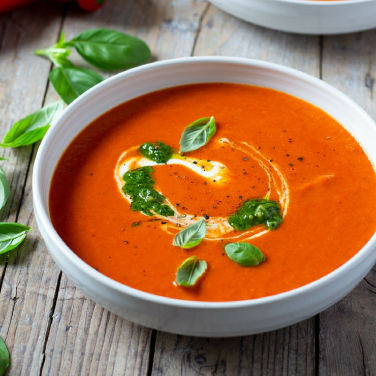

Greek Salad
Ingredients
- 4 large vine tomatoes, cut into irregular wedges
- 1 cucumber, peeled, deseeded, then roughly chopped
- ½ a red onion thinly sliced
- 16 Kalamata olives
- 1 tsp dried oregano
- 85g feta cheese, cut into chunks (barrel matured feta is the best)
- 4 tbsp Greek extra virgin olive oil

Method
STEP 1
Place 4 large vine tomatoes, cut into wedges, 1 peeled, deseeded and chopped cucumber, ½ a thinly sliced red onion, 16 Kalamata olives, 1 tsp dried oregano, 85g feta cheese chunks and 4 tbsp Greek extra virgin olive oil in a large bowl.
STEP 2
Lightly season, then serve with crusty bread to mop up all of the juices.
Roasted Red Pepper & Tomato Soup With Ricotta
Ingredients
- 2400g tomatoes , halved
- 1 red onion , quartered
- 2 Romano peppers , roughly chopped
- 2 tbsp good quality olive oil
- 2 garlic cloves , bashed in their skins
- few thyme sprigs
- 1 tbsp red wine vinegar
- 2 tbsp ricotta
- few basil leaves
- 1 tbsp mixed seeds , toasted
- bread , to serve

Method
STEP 1
Heat oven to 200C/180C fan/gas 6. Put the tomatoes, onion and peppers in a roasting tin, toss with the oil and season. Nestle in the garlic and thyme sprigs, then roast for 25-30 mins until all the veg has softened and slightly caramelised. Squeeze the garlic cloves out of their skins into the tin, strip the leaves off the thyme and discard the stalks and garlic skins. Mix the vinegar into the tin then blend everything in a bullet blender or using a stick blender, adding enough water to loosen to your preferred consistency (we used around 150ml).
STEP 2
Reheat the soup if necessary, taste for seasoning, then spoon into two bowls and top each with a spoonful of ricotta, a few basil leaves, the seeds and a drizzle of oil. Serve with bread for dunking.